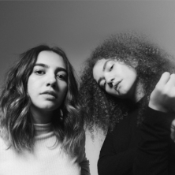
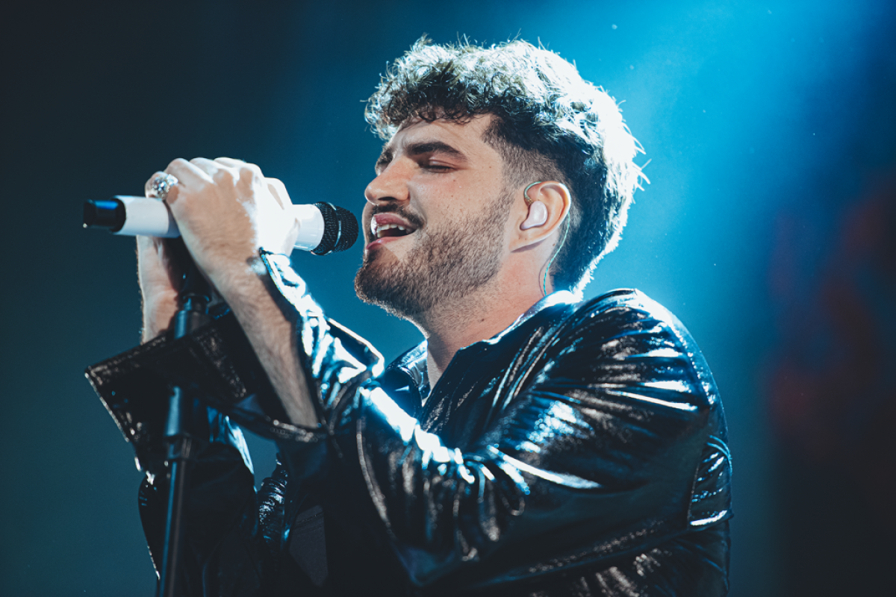
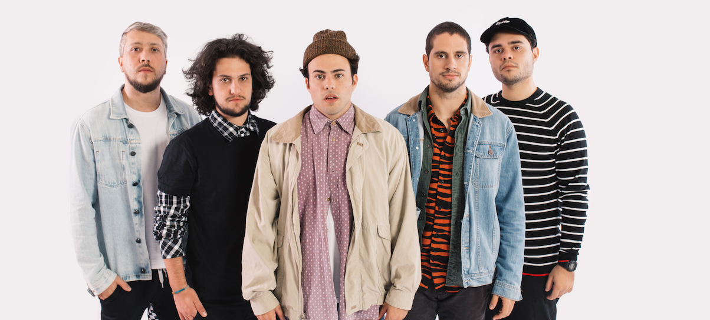
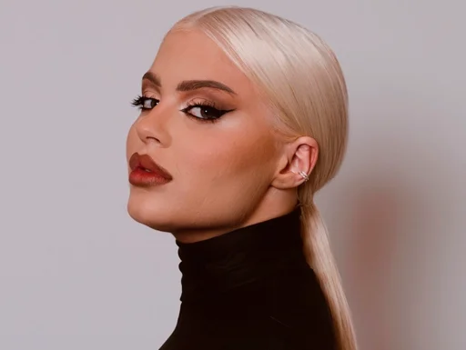
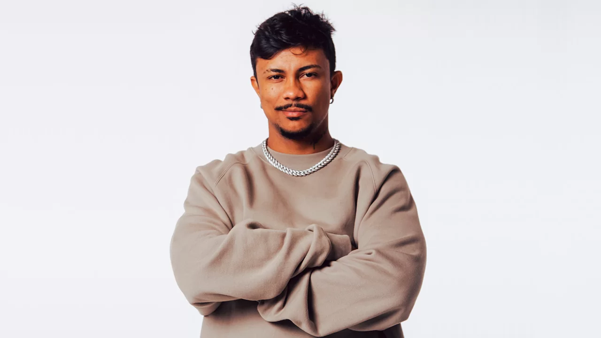

Artistas Internacionais
-

Anavitoria
Anavitória é uma dupla de música pop brasileira formado em 2014 por Ana Clara Caetano Costa e Vitória Fernandes Falcão. O primeiro álbum de estúdio do duo, Anavitória, recebeu a certificação de disco de diamante, vendendo mais de 300 mil cópias.
-

Jão
João Vitor Romania Balbino, mais conhecido pelo seu nome artístico Jão, é um cantor e compositor brasileiro. Ele começou sua carreira musical em 2016, postando covers de canções no aplicativo de compartilhamento de vídeos YouTube.
-

Lagum
Lagum é uma banda de pop e reggae brasileira formada em 2014 na cidade de Brumadinho, Minas Gerais. É composta por Pedro Calais, Otavio Cardoso, Jorge, Francisco Jardim e anteriormente Tio Wilson.
-

Luisa Sonza
Luísa Gerloff Sonza é uma cantora e compositora brasileira. Iniciou sua carreira em 2014 com covers de músicas famosas no YouTube que ganhou notoriedade e, mais de três anos depois, assinou um contrato com a Universal Music Brasil e lançou seu primeiro álbum de estúdio, intitulado de Pandora.
-

Xamã
Geizon Carlos da Cruz Fernandes, mais conhecido pelo nome artístico Xamã, é um rapper, cantor e ator brasileiro.